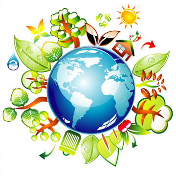

Екологічне виховання
Сучасні масштаби екологічних змін створюють реальну загрозу для життя людей. Забруднення повітря, водоймищ, ерозія ґрунтів і вирубування лісів у багатьох місцях досягли критичного рівня. Екологічна криза вимагає інтенсивного екологічного виховання підростаючого покоління зокрема і населення загалом.
Екологічне виховання - систематична педагогічна діяльність, спрямована на розвиток екологічної культури особистості.
Система екологічного виховання передбачає формування умінь аналізувати явища природи, бережливого ставлення до її багатств як надзвичайно важливого середовища існування людини.
Завдання і зміст екологічного виховання.
Основними завданнями екологічного виховання є нагромадження в людини екологічних знань, виховання любові до природи, прагнення берегти і примножувати її багатства та формування вмінь і навичок природоохоронної діяльності.
Зміст екологічного виховання передбачає розкриття сутності світу природи середовища існування людини, яка повинна бути зацікавлена у збереженні його цілісності, чистоти, гармонії. Індивід має вміти осмислювати екологічні явища і розумно взаємодіяти з природою. Естетичний підхід до природи сприяє формуванню моральних почуттів обов'язку і відповідальності за її збереження, спонукає до природоохоронної діяльності.
Розпочате в дошкільному віці екологічне виховання триває на всіх етапах навчання у школі. Кожен із них має свою мету, завдання, відповідну віковим особливостям школярів методику.
На першому етапі (молодші школярі) школа забезпечує комплексне вивчення природи і розкриття учням її багатогранних аспектів: естетичного, санітарно-гігієнічного, екологічного, економічного. Діти мають зрозуміти також залежність якості життя і здоров'я від стану довкілля, прагнути поліпшувати його.
На другому (5-7 класи) і третьому (8-9 класи) етапах учні накопичують знання про природні об'єкти, закономірності розвитку та функціонування біологічних систем, аналізують і прогнозують нескладні екологічні ситуації, закріплюють правила поведінки в навколишньому середовищі. Водночас поглиблюються і збагачуються відомості про явища і закони природи, розкриваються причини екологічної кризи та усвідомлюється необхідність збереження природних комплексів (екосистем).
На четвертому етапі (10-12 класи) завершується узагальнення здобутих екологічних знань, здійснюється моделювання простих кризових ситуацій. У навчальні плани включають інтегровані курси різних природничих, екологічних дисциплін.
Умови ефективності екологічного виховання.
Шляхами підвищення екологічної культури молоді й ефективності екологічного виховання є:
- розроблення орієнтовного змісту неперервної екологічної освіти для всіх вікових категорій підростаючого покоління, збільшення ваги екологічних питань як у рамках певних предметів, так і за допомогою налагодження внутрі- та міжпредметних зв'язків;
- створення в закладах освіти відповідної навчально-матеріальної бази: куточків охорони природи, живих куточків та ін.;
- удосконалення форм і методів екологічного виховання, активне залучення вихованців до природоохоронної роботи;
- формування мотивів відповідального ставлення до природи, прагнення глибше пізнати її, примножувати її багатства.
У формуванні екологічної культури провідна роль належить предметам природничого циклу. Однак і гуманітарні предмети передбачають щодо цього широкі можливості.